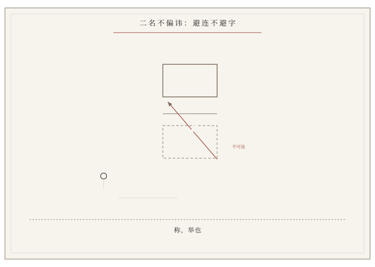

檀弓下 · 四·六十九 · 第 394 课
二名不偏讳。夫子之母名「徵在」，言「在」不称「徵」，言「徵」不称「在」。
说什么事：名字若有两字，不必两字并避。孔子的母亲名「徵在」，说到「在」的时候不带「徵」，说到「徵」的时候不带「在」。
落在哪一层：以「避」为界。讳是避开，不是禁绝；所避者是连举，不是涉字。
为何编在此位：上节以讳代生名，此节说讳也有尺寸。礼连君父之名，都不肯扩到半个字。
【经】二名不偏讳。夫子之母名「徵在」，言「在」不称「徵」，言「徵」不称「在」。
【注】称，举也。《杂记》曰：「妻之讳不举诸其侧。」
【疏】此一节论不偏讳之事。○注「称举」至「其侧」。○正义曰：引《杂记》者，证「称」是「举」之义。
二名 两字之名。
偏讳 只举其中一字而避之。
不偏讳 不必因一字涉讳而弃其用。
称 举。
言在不称徵 说「在」时不连「徵」字。
徵在 孔子之母名。颜氏女。
两字之名不必偏举一字而避。孔子的母亲名「徵在」，说「在」的时候就不带说「徵」，说「徵」的时候就不带说「在」。
此章一句经、一个例。
经订其则：二名不偏讳。例证其人：夫子之母名徵在。
一章之要，只在「不」字——礼规定礼自己的限度。
第一层 讳是「避」，不是「禁」 讳之为礼，为「不入罪名」而已。
若一字涉讳即废其用，则天下之言几不可通。 礼先替语言留出生路。
第二层 「偏」字之义 偏者，只举其一。
注以「称」为「举」，疏以《杂记》证之。故「不偏讳」者：不因一字而举讳，不必弃其字。
第三层 例证之选择 夫子举的是自己母亲的名。
这不是拿别人做样子，是把最不容商量的一处（亲母）拿出来，说「此处也不得过头」。
第四层 「言在不称徵」的实操 两字之名，说到其中一字时，不自带另一字。
礼在此给出一个可执行的界：避的是「连」，不是「字」。
第五层 此条的另一面（注引《杂记》） 「妻之讳不举诸其侧」——妻之名，不在其侧举之。
按《杂记》语境，此句所禁者极窄：不得当面举其讳。 疏仅证「称＝举」，未引申，慎守其分。
第六层 与上节对读 上节讳随卒哭而起，是「何时」；此节讳不偏举，是「多少」。
礼于讳，先定时刻，再定幅度。 两节合看，方见其全。
第七层 这一条的分量 后世避讳至于改字、缺笔、易官名、改地名，皆非此经之意。
经只说「不偏讳」。凡以讳改天地之名者，皆出此经之外。
与今日何干 今之讳，常不在名而在话题：某字一提便群起而攻。
此章给一句：避要避到能活，禁要禁得有界。
| 左 | 右 |
|---|---|
| 二名 | 两字之名 |
| 不偏讳 | 不举一字而避 |
| 徵在 | 夫子母名 |
| 言在 | 单举一字 |
| 不称徵 | 不连举 |
| 称 | 举也 |
| 讳 | 避，非禁 |
| 避连不避字 | 其界 |
| 不举诸其侧 | 注引《杂记》 |
画一幅极简的图示，视点平视。画面中央上下排列两个方形小框，上框内留空，下框内留空，两框之间画一条横线相隔。左框被一条实线边框加粗勾出，右框的边框改画成虚线。两框之下画一条斜向的短箭头，箭头自右框指向左框，箭头中段压一道短叉，表示「不可连」。画面右下角画一极小的人形侧面，作低头状。不画文字。赭色只用在那道短叉上。
